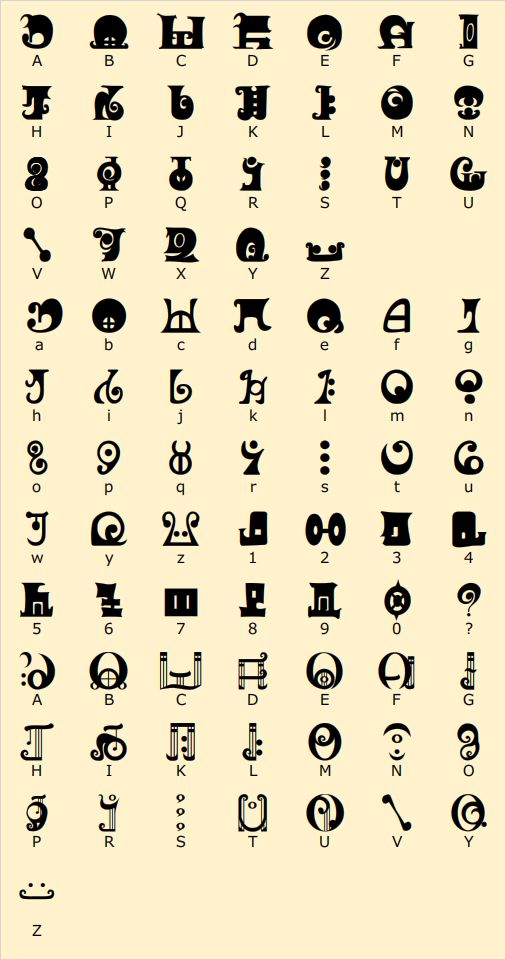

魔女文字解读
识别图片
点击选择图片，或把图片拖到这里
支持黑底白字、白底黑字、上下边框、背景纹理和多行字母表。复杂图片可选择“自动去边框”或指定布局。
请选择一张图片。
图像预览
尚未选择图片。
处理后图像
识别结果
V6 会比较原图、去边框二值图、备用极性、整行与逐字识别结果，并按置信度、字符数量和重复噪声选择最佳候选。透视严重时仍建议先校正画面。
已登记魔女文字对照表

本地模型：MadokaRunes、MadokaMusical。识别引擎由 Tesseract.js 在浏览器中运行。